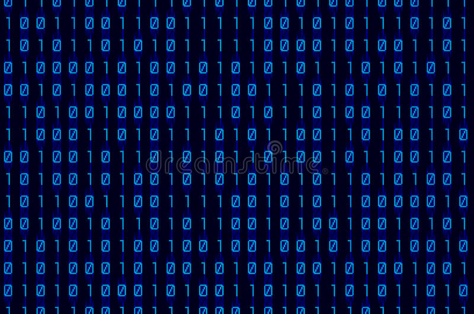

The user is prompted with six fully functional menu options, most of these options showcase the ability to manipulate a vector of records. This program uses a binary search algorithm and selection sort on the records of information. This program shows the abilitiy to utilize vectors and algorithms for real world applciations.
This program uses multiple four header files for the corresponding employees. This program has the option to take information from a stipend, hourly, and salaried employee to calculate their weekly pay. This program can take the information of multiple employees at a time and the program will display a report of all of the employee's weekly pay.
This program performs bubble and selection sort to showcase fundamental sorting methods. Functions are created to allow for both sorting methods to run more efficiently.
This program demonstrates the ability to perform mathematical algorithms in C++. This program takes celsius as input from the user and converts the celsius given to fahrenheit and kelvin. A neatly formatted list of conversions are then displayed.
This program demonstrates the ability to use File IO to read and write to files by utilizing paths. The program will take a text file of a contact list and re-format it by writting the re-formatted version to another text file.
This program gives the user six fully functional menu choices that allow the user to manipulate an array list of widgets. This program demonstrates the ability to utilize code for real world applications.

This program demonstrates the ability to perform fundamental input and output. It utilizes a static class to perform a binary conversion algorithm on the user's input. It uses while loops to perform case sensitive string validation as well.